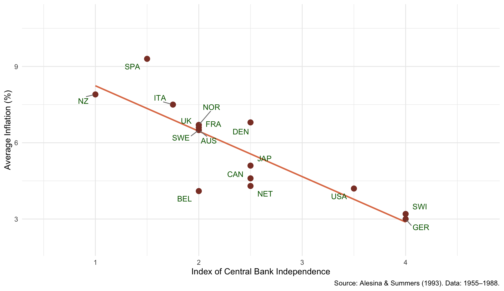
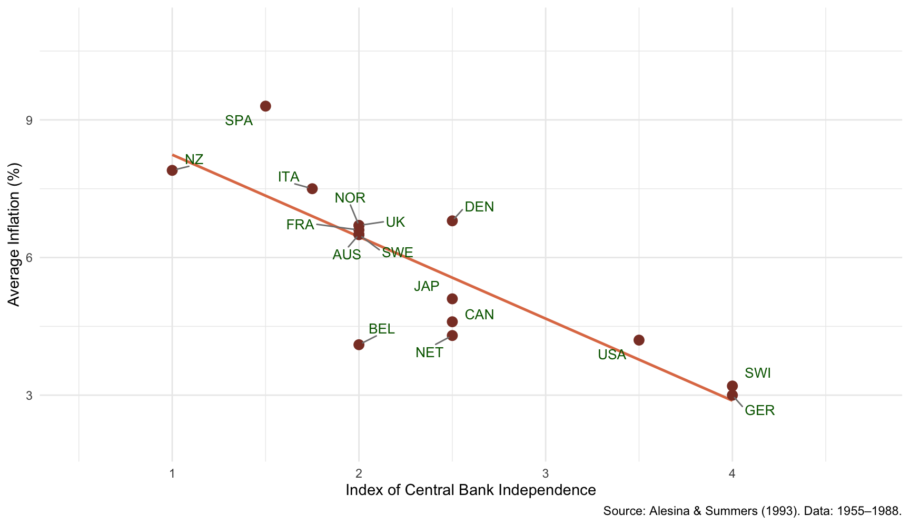

Lecture 12.2
Central Bank Independence
The Fed Under Fire
“Mr. Too Late”
“There can almost be no inflation, but there can be a SLOWING of the economy unless Mr. Too Late, a major loser, lowers interest rates, NOW.”
— Donald Trump, Truth Social, April 21, 2025
Trump subsequently threatened to fire Fed Chair Jerome Powell. Markets fell ~2.4% the day of the post; the dollar also fell. Powell said he would not resign and Trump later backed off: “I have no intention of firing him.”
What Does the Fed Do?
- Sets the federal funds rate (the benchmark interest rate)
- Controls the money supply and credit conditions
- Acts as lender of last resort to the banking system
- Mandated by Congress to pursue price stability and maximum employment
- Operates independently of the White House (by design)
An Old Debate
- Politicians have always been tempted to pressure central banks
- Lower rates → cheaper credit → short-term boost to growth and jobs
- But expansionary monetary policy can cause inflation
- Political business cycle theory (Nordhaus 1975): governments inflate before elections
- Nixon’s pressure on Fed Chair Arthur Burns before 1972 election (a classic case)
- Should monetary policy be insulated from politics?
Alesina & Summers Framework
Two Central Questions
- Does central bank independence (CBI) reduce inflation?
- If so, is there a cost to real economic performance, e.g. growth & unemployment?
- If the answer to (1) is yes and (2) is no — that is a “free lunch”
- Alesina and Summers argue this is exactly what the data show
Why Might Politicians Want Easy Money?
- Real output can be temporarily boosted by loose monetary policy
- Lower rates → cheaper borrowing → more investment and consumption
- Political business cycles: rate cuts before elections inflate short-term growth
- Classic example: Nixon pressuring Fed Chair Aurthor Burns before 1972 presidential election
The Problem
- Dynamic inconsistency (Kydland & Prescott 1977; Barro & Gordon 1983)
- Governments face a short-term temptation to inflate: boost output and cut unemployment before elections
- But if people expect inflation, they demand higher wages → prices rise with no lasting output gain
- A government that cannot commit to low inflation ends up with high inflation and no output benefit
The Solution: Central Bank Independence
- Delegate monetary policy to a conservative, independent central banker
- Independent central bankers are more inflation-averse than the median voter
- Can credibly commit to price stability in a way that elected governments cannot
- Political insulation = credible commitment = lower inflation expectations
The Counter-Argument
- Politically responsive central banks may better stabilize output
- Independent central banks may tolerate higher unemployment to fight inflation
- Primarily research by Rogoff (1985)
Measuring Central Bank Independence
- Not straightforward because independence is multi-dimensional
- Two main indices:
- Bade-Parkin (BP): 1–4 scale based on political independence — relationship with the executive, appointment procedures, government representation on the board
- Grilli-Masciandaro-Tabellini (GMT): adds economic independence — can the government force the central bank to finance deficits?
- Alesina & Summers average the two into a single 1–4 scale (higher = more independent)
- Sample: 16 OECD countries, 1955–1988
Who Is Most (and Least) Independent?
| Least Independent | CBI | Most Independent | CBI |
|---|---|---|---|
| New Zealand | 1.0 | Germany | 4.0 |
| Spain | 1.5 | Switzerland | 4.0 |
| Italy | 1.75 | United States | 3.5 |
| Australia, Belgium, France, Norway, Sweden, UK | 2.0 | Japan, Canada, Netherlands, Denmark | 2.5 |
Discussion: Before We Look at the Data
Given these rankings, what do you expect the relationship to be between CBI and inflation?
What about CBI and economic growth?
Does the ranking of any country surprise you?
The Evidence
CBI and Average Inflation

CBI and Average Real GNP Growth

What Do You See?
What pattern do you see in the inflation chart?
What pattern do you see in the GNP growth chart?
What is the implication if both patterns are true simultaneously?
Any outliers that stand out? What might explain Japan? New Zealand?
The “Free Lunch” Result
CBI strongly associated with lower inflation — near-perfect negative correlation
- Also holds for inflation variability (more independent banks → more stable prices too)
CBI has no measurable effect on real output — flat relationship with GNP growth, unemployment, and real interest rates
Implication: CBI delivers price stability at no cost to economic performance (free lunch!)
Subsequent Research
What’s Wrong with the Alesina & Summers Study?
Small N, no controls: only 16 countries; simple scatter plots with no regression or confounders
- What if something else — trade openness, fiscal discipline — explains both higher CBI and lower inflation?
Endogeneity: does CBI cause low inflation, or do countries with pre-existing low-inflation preferences simply grant more independence?
- Germany: 1920s hyperinflation trauma → public aversion to inflation → independent Bundesbank
- The correlation could run in reverse
De jure ≠ de facto: indices measure central bank laws, not actual behavior (laws can be ignored)
Historical period: all data from 1955–1988; the world has changed substantially since
What Has Research Found Since?
Klomp & de Haan (2010) — meta-regression of 59 studies: the negative CBI–inflation link is real even correcting for publication bias, but the size of the effect varies across specifications
Bodea & Hicks (2015) — panel data with instrumental variables: CBI lowers inflation and the “free lunch” holds, but mainly in democracies where legal commitments are credible
Acemoglu et al. (2008) — most important challenge: CBI is largely endogenous to political institutions; where executive power is unconstrained, CBI reform is ineffective because politicians find other ways to inflate (fiscal dominance, financial repression)
Bottom line: for developed democracies, Alesina & Summers holds reasonably well with modern methods; for developing countries, institutional context is everything
Developing Countries: The De Jure / De Facto Gap
In many developing countries, central banks are legally independent but not actually independent
Cukierman et al. (1992): use central bank governor turnover as a proxy for de facto independence
- High turnover = governors being fired = low real independence
- Legal CBI predicts little in developing countries; actual behavior predicts more
Garriga (2016): 182-country panel shows that CBI reduces inflation in developing countries, but only where rule of law is strong
Key insight (Acemoglu et al.): CBI may be a symptom of good institutions rather than a cause of good outcomes
Post-2008: New Pressures
- Quantitative easing (QE): central banks purchased government bonds at massive scale to fight the financial crisis and COVID recession
- Blurs the monetary/fiscal line
- Risk of fiscal dominance: central banks that hold large amounts of government debt may be unable to raise rates without triggering sovereign debt crises
- Distributional politics: near-zero rates and asset purchases benefited asset-holders and debtors; savers and pensioners lost
- Made central banks politically visible in a new way, i.e. harder to claim “apolitical” status
- Post-COVID inflation surge: central banks were slow to raise rates in 2021–22; accusations of political influence resurfaced
A Natural Experiment: Turkey
When Central Bank Independence Breaks Down
- President Erdogan dismissed six central bank governors between 2016 and 2023
- Governors were fired for resisting pressure to cut rates despite rising inflation
- Erdogan’s unorthodox theory: high interest rates cause inflation (mainstream economics says the opposite)
| Year | Inflation |
|---|---|
| 2019 | ~11% |
| 2021 | ~21% |
| 2022 | ~85% |
| 2023 | ~65% (after policy reversal) |
- Turkey eventually reversed course; a new governor hiked rates and inflation fell
- But credibility damage was lasting (near perfect test of A&S logic)
The Bigger Debate
Two Camps
CBI as technocratic solution
- Elected politicians have short-term incentives; monetary policy requires a long view
- Evidence: CBI lowers inflation at no output cost (for developed economies)
- Turkey shows what happens when independence is removed
- Insulating the central bank from electoral cycles is simply good institutional design
CBI as democratic problem
- Unelected officials make decisions with large distributional consequences
- High rates hurt debtors, workers, homebuyers
- Low rates hurt savers, pensioners
- “Insulated from politics” often means insulated from accountability
- QE and the 2008 crisis showed central banks are never truly apolitical
Discussion
Should central banks be independent of political control?
Who wins and who loses when interest rates are high? When they are low?
Does the Trump-Powell conflict change your view? Does the Turkey case?
Is there a middle ground between full independence and full political control?